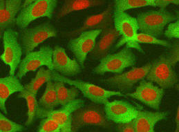
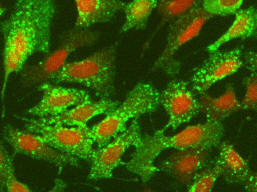
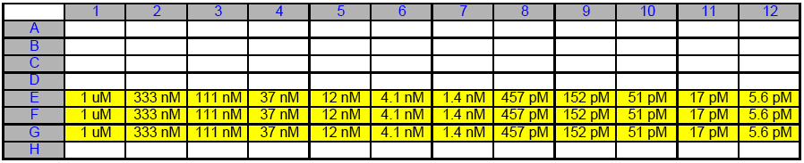

Broad Bioimage Benchmark Collection
Annotated biological image sets for testing and validation
Human U2OS cells transfluor
Accession number BBBC015 · Version 1
Example images
-
Positive
-
Negative
Biological application
The images are of a human osteosarcoma cell line (U2OS) co-expressing beta2 (b2AR) adrenergic receptor and arrestin-GFP protein molecules. The receptor was modified-type that generates "vesicle-type" spots upon ligand stimulation.
Images
The plate was acquired on iCyte imaging cytometer with iCyte software version 2.5.1. Image file format is JPEG with one image for green channel and one image for crimson channel. Image size is 1000 x 768 pixels.
Ground truth B
This image set has a portion of a 96-well plate containing 3 replica rows and 12 concentration points of isoproterenol. In each well four fields were acquired. File name structure: <well-number>_<field>_<channel>.JPG

BBBC015_v1_platemap.xls (17 kB)
The following file encodes this plate map in the format expected by CellProfiler's LoadText module:
BBBC015_v1_platemap.txt (859 b)
Published results using this image set
| Z'-factor | V-factor | Citation |
|---|---|---|
| 0.69* | Carpenter et al., Genome Biol., 2006 | |
| 0.63* | Logan and Carpenter, J. Biomol. Screening, 2010 |
For files to reproduce results in Logan and Carpenter, J. Biomol. Screening, 2010, see image set BBBC013.
For more information
These images were originally gathered for Ilya Ravkin's Invitation to Participate in the Comparison of Image Analysis Algorithms for Intracellular Screening.
Recommended citation
"We used image set BBBC015v1 provided by Ilya Ravkin, available from the Broad Bioimage Benchmark Collection [Ljosa et al., Nature Methods, 2012]."
Copyright
 The BBBC015 images
are licensed under a
Creative Commons Attribution 3.0 Unported License
by
Ilya Ravkin.
The BBBC015 images
are licensed under a
Creative Commons Attribution 3.0 Unported License
by
Ilya Ravkin.